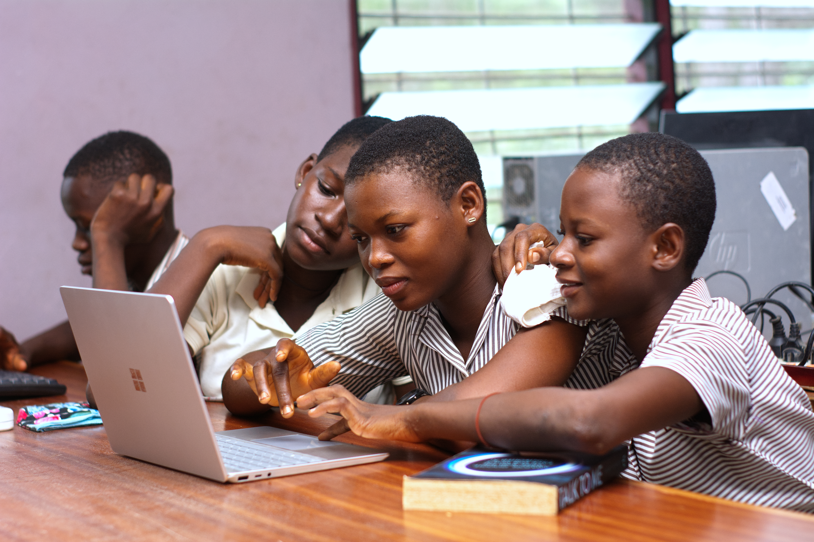

Cuatro ámbitos de la vida cotidiana
Educación: aprender con acompañamiento
Las aulas virtuales permiten consultar materiales, entregar tareas y recibir retroalimentación. Por ejemplo, un estudiante puede revisar una lectura antes de una tutoría. Es un ejemplo ilustrativo, no una medición de resultados.
UNESCO plantea que la tecnología debe responder a las necesidades de aprendizaje y apoyar la interacción humana. La conectividad y la preparación docente condicionan sus beneficios. (Global Education Monitoring Report Team, 2023)

Comunicación: participar sin barreras
Los foros y las reuniones por navegador permiten intercambiar ideas a distancia. Una asociación puede publicar acuerdos en un sitio web para que sus integrantes los consulten.
La participación requiere interfaces comprensibles y alternativas para personas con discapacidad. El video de W3C explica cómo los subtítulos y las descripciones textuales ayudan a acceder al contenido. (W3C WAI, 2017)
Salud: servicios digitales centrados en las personas
Un portal puede facilitar la consulta de información sanitaria y la gestión de citas. Estos ejemplos de uso web forman parte de un ámbito de salud digital más amplio.
La estrategia de la OMS señala que las iniciativas de salud digital requieren coordinación de recursos humanos, organizativos, financieros y tecnológicos. Un portal por sí solo no resuelve esas necesidades. (World Health Organization, 2025)
Servicios digitales: trámites y acceso a información
Consultar un requisito o solicitar un turno mediante una página puede evitar desplazamientos para esas gestiones. Es un ejemplo de aplicación, cuya utilidad depende del servicio concreto.
Los trámites deben ofrecer instrucciones claras, formularios con etiquetas y vías de atención para quienes encuentran barreras. Esta recomendación aplica los principios de accesibilidad explicados por W3C WAI (2017).